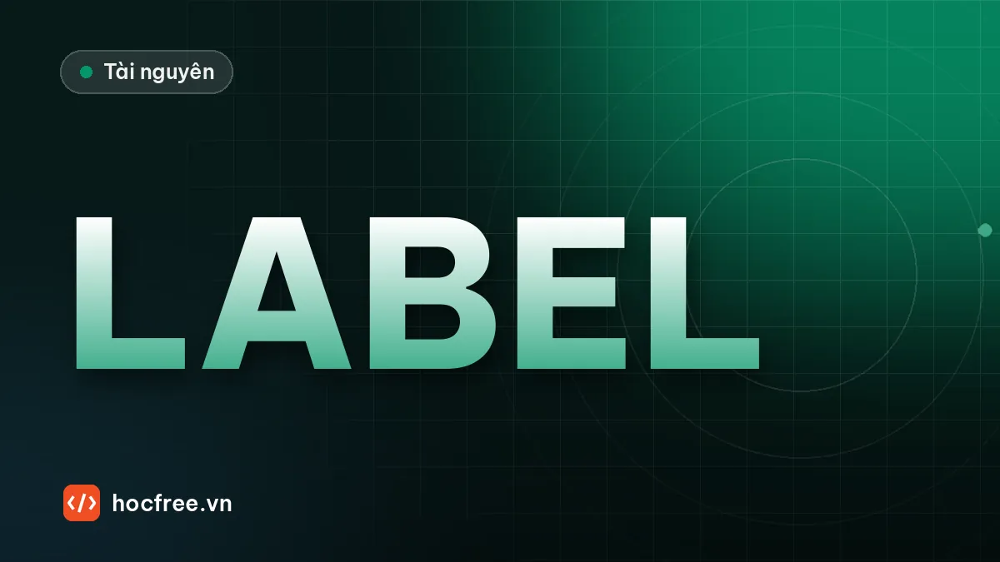

Công cụ gán nhãn ảnh miễn phí: CVAT, Label Studio, X-AnyLabeling
Chọn công cụ, hiểu định dạng YOLO, COCO, VOC, chuyển đổi có kiểm tra, script QA nhãn, hướng dẫn gán nhãn và đo mức thống nhất bằng IoU.

Học xong bài này, bạn sẽ
- Chọn CVAT, Label Studio hay X-AnyLabeling
- Xuất nhãn đúng định dạng
- Viết hướng dẫn gán nhãn nhất quán
Nên học trước: Tự xây dataset ảnh công nghiệp
Nội dung bài viết
- 1. Chọn kiểu nhãn trước khi chọn công cụ
- 2. Các công cụ miễn phí nên biết
- 3. Định dạng nhãn: mỗi con số nghĩa là gì
- 4. Chuyển đổi YOLO ↔ COCO và kiểm tra khứ hồi
- 5. Vẽ nhãn lên ảnh để kiểm tra bằng mắt
- 6. Script kiểm tra chất lượng nhãn (label QA)
- 7. Hướng dẫn gán nhãn: tài liệu quan trọng nhất của dataset
- 8. Đo mức thống nhất giữa hai người gán
- 9. Quy trình gán nhãn hiệu quả
- 10. Sai lầm thường gặp
- 11. Bài tập
- Tóm tắt
Gán nhãn (annotation) là khâu tốn công nhất của một dự án AI Vision và cũng là nơi lỗi âm thầm nhất: một nhãn lệch, một lớp bị gán nhầm, một file xuất sai hệ tọa độ sẽ không báo lỗi gì, chỉ làm mô hình kém đi mà không ai biết vì sao. Bài trước, "Tự xây dataset ảnh công nghiệp", cho bạn thư mục ảnh có metadata, phiên bản và cách chia tập. Bài này chọn công cụ gán nhãn miễn phí phù hợp (CVAT, Label Studio, X-AnyLabeling và vài công cụ khác), hiểu chính xác các định dạng nhãn YOLO, COCO, Pascal VOC, mặt nạ, viết bộ chuyển đổi YOLO ↔ COCO có kiểm tra khứ hồi, script vẽ nhãn lên ảnh và kiểm tra chất lượng nhãn, soạn hướng dẫn gán nhãn và đo mức thống nhất giữa hai người gán. Bài sau, "Khi thiếu ảnh lỗi: augmentation và dữ liệu tổng hợp", dùng chính định dạng YOLO ở đây để sinh nhãn tự động.
1. Chọn kiểu nhãn trước khi chọn công cụ
Kiểu nhãn quyết định chi phí gán và việc mô hình có thể làm. Chọn theo đầu ra cần có (bài "Rule-based hay Deep Learning?"):
| Kiểu nhãn | Dùng cho | Chi phí gán (tham khảo) | Ghi chú công nghiệp |
|---|---|---|---|
| Nhãn cấp ảnh (tag) | Phân loại OK/NG, loại lỗi | Thấp nhất, vài giây/ảnh | Không cho vị trí, không đo được kích thước lỗi |
| Khung bao (bounding box) | Phát hiện, đếm | Trung bình, 10–30 s/vết | Vết xước chéo dài: khung chứa phần lớn là nền, IoU kém ổn định |
| Đa giác (polygon) | Phân đoạn instance | Cao, 30–120 s/vết | Đo được diện tích, chiều dài để áp tiêu chí mm² |
| Mặt nạ cọ vẽ (brush mask) | Phân đoạn ngữ nghĩa, vết loang | Cao | Hợp với vết loang màu, ăn mòn không có biên rõ |
| Điểm, đường (keypoint, polyline) | Vị trí chân linh kiện, đường hàn | Trung bình | Polyline hợp với vết xước mảnh hơn khung bao |
2. Các công cụ miễn phí nên biết
CVAT
- Mã nguồn mở, chạy trên trình duyệt; tự cài trên máy chủ nội bộ bằng Docker Compose, hoặc dùng bản dịch vụ trên mây của nhà phát triển.
- Đủ kiểu nhãn: khung bao, đa giác, polyline, điểm, mặt nạ cọ vẽ, skeleton; gán nhãn video theo khung hình có nội suy giữa các khung.
- Quản lý dự án, chia việc (task, job) cho nhiều người, có bước kiểm duyệt (review).
- Xuất và nhập nhiều định dạng, trong đó có COCO, Pascal VOC, YOLO, mặt nạ phân đoạn.
- Có thể nối mô hình hỗ trợ gán nhãn tự động, nhưng cần cài thêm thành phần, hãy đọc tài liệu chính thức của phiên bản bạn dùng.
- Hợp với: nhóm 2 người trở lên, dự án nghiêm túc cần phân công và duyệt, dữ liệu mật phải ở máy chủ nội bộ.
# Cài CVAT trên máy chủ Linux đã có Docker (xem hướng dẫn cài đặt chính thức của CVAT)
git clone https://github.com/cvat-ai/cvat
cd cvat
docker compose up -d
# tạo tài khoản quản trị
docker exec -it cvat_server bash -ic 'python3 ~/manage.py createsuperuser'
# mở trình duyệt: http://localhost:8080Label Studio
- Mã nguồn mở (có thêm bản thương mại), cài bằng
pip, chạy trên trình duyệt. - Không chỉ ảnh mà cả văn bản, âm thanh, chuỗi thời gian; giao diện gán nhãn tùy biến bằng cấu hình dạng XML.
- Có cơ chế nối mô hình (ML backend) để gán nhãn trước (pre-annotation), người gán chỉ sửa.
- Định dạng xuất phụ thuộc cấu hình gán nhãn; với khung bao ảnh có các định dạng phổ biến như JSON riêng của Label Studio, COCO, Pascal VOC, YOLO.
- Hợp với: dự án nhiều loại dữ liệu, cần tùy biến giao diện, người quen Python.
python -m venv ls-env
source ls-env/bin/activate # Windows: ls-env\Scripts\activate
pip install label-studio
label-studio start # mặc định mở http://localhost:8080 (trùng cổng với CVAT nếu chạy cùng máy)X-AnyLabeling
- Ứng dụng desktop mã nguồn mở, kế thừa giao diện kiểu LabelMe, tích hợp sẵn nhiều mô hình hỗ trợ gán nhãn tự động (các họ YOLO, Segment Anything…) chạy cục bộ.
- Bấm một điểm hoặc kéo một khung, mô hình phân đoạn tự vẽ đa giác quanh vật; nhanh hơn nhiều so với vẽ tay cho bài toán phân đoạn.
- Xuất được các định dạng phổ biến (YOLO, COCO, VOC…); cài theo hướng dẫn trong kho mã chính thức (bản đóng gói sẵn hoặc từ mã nguồn).
- Hợp với: một hoặc vài người, dự án phân đoạn cần tốc độ, máy tính không được nối mạng.
Công cụ khác
- LabelMe: desktop gọn nhẹ, mỗi ảnh một file JSON, mạnh về đa giác; cần script chuyển sang định dạng huấn luyện.
- labelImg: công cụ khung bao cũ rất phổ biến trong các hướng dẫn trên mạng, nhưng đã ngừng phát triển; dự án mới nên dùng công cụ còn được bảo trì.
- Dịch vụ trên mây (Roboflow và các nền tảng tương tự): tiện, có gói miễn phí, nhưng hãy đọc kỹ điều khoản. Gói miễn phí có thể yêu cầu dữ liệu ở chế độ công khai; không tải ảnh sản phẩm của khách hàng lên khi chưa có sự đồng ý bằng văn bản.
Bảng chọn nhanh
| Tình huống | Gợi ý |
|---|---|
| Nhóm 2–10 người, cần phân công, duyệt, dữ liệu mật | CVAT tự cài trên máy chủ nội bộ |
| Một người, phân đoạn nhiều, muốn AI hỗ trợ ngay | X-AnyLabeling |
| Nhiều loại dữ liệu, muốn tùy biến giao diện, nối mô hình riêng | Label Studio |
| Chỉ nhãn OK/NG cấp ảnh | Công cụ nào cũng được; thậm chí một script hiển thị lưới ảnh và bắt phím o/n |
| Dữ liệu không mật, muốn nhanh, chấp nhận lưu trên mây | Dịch vụ trên mây có gói miễn phí (kiểm tra điều khoản) |
3. Định dạng nhãn: mỗi con số nghĩa là gì
| Định dạng | Tổ chức | Khung bao | Lớp |
|---|---|---|---|
| YOLO (txt) | Mỗi ảnh một file .txt cùng tên; danh sách tên lớp trong file cấu hình (data.yaml) | lop cx cy w h, tâm và kích thước chuẩn hóa 0–1 theo chiều rộng, chiều cao ảnh | Chỉ số từ 0 |
| YOLO phân đoạn | Như trên | lop x1 y1 x2 y2 … các đỉnh đa giác chuẩn hóa | Chỉ số từ 0 |
| COCO (JSON) | Một file cho cả tập: images, annotations, categories | bbox: [x_min, y_min, width, height] tính bằng pixel; đa giác trong segmentation | category_id tùy đặt, thường bắt đầu từ 1 |
| Pascal VOC (XML) | Mỗi ảnh một file XML | xmin ymin xmax ymax pixel, theo quy ước gốc đánh số từ 1 | Tên lớp dạng chữ |
| Mặt nạ (PNG) | Mỗi ảnh một PNG một kênh | Không có; mỗi pixel mang chỉ số lớp, 0 = nền | Giá trị pixel |
Ba bẫy kinh điển: (1) COCO dùng góc trên trái, YOLO dùng tâm; (2) YOLO chuẩn hóa theo kích thước ảnh, nên ảnh bị resize sau khi gán nhãn thì nhãn YOLO vẫn đúng còn nhãn pixel thì sai; (3) mặt nạ lưu bằng JPEG bị nén làm giá trị lớp ở biên thành số lạ, luôn lưu PNG.
Tạo bộ dữ liệu mẫu: 10 ảnh 320×240 với vết xước, đốm, sứt mép, kèm nhãn YOLO (một ảnh OK có file nhãn rỗng):
import os
import shutil
import cv2
import numpy as np
rng = np.random.default_rng(3)
LOP = ["xuoc", "dom", "sut_me"]
W, H = 320, 240
shutil.rmtree("ds_nhan", ignore_errors=True)
os.makedirs("ds_nhan/images")
os.makedirs("ds_nhan/labels")
with open("ds_nhan/classes.txt", "w") as f:
f.write("\n".join(LOP) + "\n")
for i in range(10):
img = np.clip(rng.normal(150, 8, (H, W, 3)), 0, 255).astype(np.uint8)
dong = []
for _ in range(int(rng.integers(0, 4)) if i else 0): # ảnh 0 là ảnh OK
lop = int(rng.integers(0, 3))
cx, cy = int(rng.integers(40, W - 40)), int(rng.integers(40, H - 40))
if lop == 0: # xước: đoạn thẳng
dx, dy = int(rng.integers(-30, 31)), int(rng.integers(-12, 13))
cv2.line(img, (cx - dx, cy - dy), (cx + dx, cy + dy), (80, 80, 80), 2)
x0, x1 = sorted((cx - dx, cx + dx))
y0, y1 = sorted((cy - dy, cy + dy))
x0, y0, x1, y1 = x0 - 2, y0 - 2, x1 + 2, y1 + 2
elif lop == 1: # đốm: hình tròn
r = int(rng.integers(4, 10))
cv2.circle(img, (cx, cy), r, (60, 60, 60), -1)
x0, y0, x1, y1 = cx - r, cy - r, cx + r, cy + r
else: # sứt mép: tam giác ở mép trên
cx, cy = int(rng.integers(40, W - 40)), 0
pts = np.array([[cx - 12, 0], [cx + 12, 0], [cx, 14]], np.int32)
cv2.fillPoly(img, [pts], (40, 40, 40))
x0, y0, x1, y1 = cx - 12, 0, cx + 12, 14
dong.append(f"{lop} {(x0 + x1) / 2 / W:.6f} {(y0 + y1) / 2 / H:.6f} "
f"{(x1 - x0) / W:.6f} {(y1 - y0) / H:.6f}")
cv2.imwrite(f"ds_nhan/images/anh_{i:02d}.png", img)
with open(f"ds_nhan/labels/anh_{i:02d}.txt", "w") as f:
f.write("\n".join(dong) + ("\n" if dong else "")) # ảnh OK: file rỗng
print("ví dụ anh_01.txt:")
print(open("ds_nhan/labels/anh_01.txt").read().strip())
print("số khung mỗi ảnh:", [len(open(f"ds_nhan/labels/anh_{i:02d}.txt").read().split("\n")) - 1
for i in range(10)])ví dụ anh_01.txt:
2 0.162500 0.029167 0.075000 0.058333
số khung mỗi ảnh: [0, 1, 2, 3, 0, 2, 3, 0, 0, 0]Đọc dòng đầu của anh_01.txt: lớp, rồi tâm x, tâm y, rộng, cao, tất cả là tỉ lệ so với 320 và 240. Nhân ngược ra pixel để kiểm tra bằng tay khi nghi ngờ.
4. Chuyển đổi YOLO ↔ COCO và kiểm tra khứ hồi
Công cụ gán nhãn thường xuất COCO, còn trình huấn luyện YOLO cần txt (hoặc ngược lại). Viết bộ chuyển đổi của riêng bạn một lần, kèm phép thử khứ hồi (round-trip): YOLO → COCO → YOLO phải cho lại đúng số liệu ban đầu.
import glob
import json
import os
import cv2
import numpy as np
GOC = "ds_nhan"
LOP = open(f"{GOC}/classes.txt").read().split()
def yolo_sang_coco(goc, lop):
coco = {"images": [], "annotations": [],
"categories": [{"id": i + 1, "name": n} for i, n in enumerate(lop)]} # COCO: id từ 1
for img_id, p in enumerate(sorted(glob.glob(f"{goc}/images/*.png")), start=1):
h, w = cv2.imread(p).shape[:2]
ten = os.path.basename(p)
coco["images"].append({"id": img_id, "file_name": ten, "width": w, "height": h})
for dong in open(f"{goc}/labels/{ten[:-4]}.txt").read().split("\n"):
if not dong.strip():
continue
c, cx, cy, bw, bh = dong.split()
bw_px, bh_px = float(bw) * w, float(bh) * h
x0, y0 = float(cx) * w - bw_px / 2, float(cy) * h - bh_px / 2 # tâm → góc trên trái
coco["annotations"].append({
"id": len(coco["annotations"]) + 1, "image_id": img_id, "category_id": int(c) + 1,
"bbox": [round(x0, 2), round(y0, 2), round(bw_px, 2), round(bh_px, 2)],
"area": round(bw_px * bh_px, 2), "iscrowd": 0})
return coco
def coco_sang_yolo(coco, thu_muc_ra):
os.makedirs(thu_muc_ra, exist_ok=True)
id_sang_lop = {c["id"]: i for i, c in enumerate(sorted(coco["categories"], key=lambda c: c["id"]))}
theo_anh = {im["id"]: [] for im in coco["images"]}
for a in coco["annotations"]:
theo_anh[a["image_id"]].append(a)
for im in coco["images"]:
w, h = im["width"], im["height"]
dong = []
for a in theo_anh[im["id"]]:
x0, y0, bw, bh = a["bbox"]
dong.append(f"{id_sang_lop[a['category_id']]} {(x0 + bw / 2) / w:.6f} {(y0 + bh / 2) / h:.6f} "
f"{bw / w:.6f} {bh / h:.6f}")
with open(f"{thu_muc_ra}/{im['file_name'].rsplit('.', 1)[0]}.txt", "w") as f:
f.write("\n".join(dong) + ("\n" if dong else "")) # ảnh không có vật thể vẫn có file rỗng
coco = yolo_sang_coco(GOC, LOP)
with open(f"{GOC}/annotations_coco.json", "w") as f:
json.dump(coco, f, indent=1)
print(f"COCO: {len(coco['images'])} ảnh, {len(coco['annotations'])} nhãn; nhãn đầu: {coco['annotations'][0]}")
coco_sang_yolo(json.load(open(f"{GOC}/annotations_coco.json")), f"{GOC}/labels_khu_hoi")
sai_max, so_dong = 0.0, 0
for p in sorted(glob.glob(f"{GOC}/labels/*.txt")):
doc = lambda q: np.array([d.split() for d in open(q).read().split("\n") if d.strip()], float).reshape(-1, 5)
a, b = doc(p), doc(p.replace("/labels/", "/labels_khu_hoi/"))
assert a.shape == b.shape, p
if a.size:
assert (a[:, 0] == b[:, 0]).all(), "sai lớp"
sai_max = max(sai_max, float(np.abs(a[:, 1:] - b[:, 1:]).max()))
so_dong += len(a)
print(f"khứ hồi YOLO→COCO→YOLO: {so_dong} dòng, sai lệch lớn nhất {sai_max:.1e} (≈ {sai_max * 320:.3f} px)")COCO: 10 ảnh, 11 nhãn; nhãn đầu: {'id': 1, 'image_id': 2, 'category_id': 3, 'bbox': [40.0, 0.0, 24.0, 14.0], 'area': 336.0, 'iscrowd': 0}
khứ hồi YOLO→COCO→YOLO: 11 dòng, sai lệch lớn nhất 0.0e+00 (≈ 0.000 px)Sai lệch bằng 0 ở đây vì khung mẫu có tọa độ pixel nguyên; với khung lẻ, sai lệch chỉ ở mức làm tròn (2 chữ số thập phân khi ghi pixel trong COCO, 6 chữ số khi ghi YOLO), nhỏ hơn nhiều so với 1 pixel. Nếu khứ hồi lệch hàng chục pixel hoặc sai lớp, bộ chuyển đổi có lỗi: lẫn tâm với góc, quên chuẩn hóa, lệch chỉ số lớp 0/1.
Pascal VOC và mặt nạ
VOC là XML dễ đọc; đọc/ghi bằng thư viện chuẩn xml.etree. Mặt nạ phân đoạn thì chuyển sang đa giác YOLO-seg bằng cv2.findContours, và từ mặt nạ suy ra khung bao:
import xml.etree.ElementTree as ET
import cv2
import numpy as np
W, H = 320, 240
LOP = open("ds_nhan/classes.txt").read().split()
# --- YOLO → VOC cho một ảnh
goc = ET.Element("annotation")
ET.SubElement(goc, "filename").text = "anh_01.png"
kt = ET.SubElement(goc, "size")
for k, v in (("width", W), ("height", H), ("depth", 3)):
ET.SubElement(kt, k).text = str(v)
for dong in open("ds_nhan/labels/anh_01.txt").read().split("\n"):
if not dong.strip():
continue
c, cx, cy, bw, bh = map(float, dong.split())
x0, y0 = (cx - bw / 2) * W, (cy - bh / 2) * H
x1, y1 = (cx + bw / 2) * W, (cy + bh / 2) * H
ob = ET.SubElement(goc, "object")
ET.SubElement(ob, "name").text = LOP[int(c)]
hop = ET.SubElement(ob, "bndbox")
# quy ước VOC gốc: pixel đánh số từ 1 → cộng 1 cho xmin, ymin
for k, v in (("xmin", x0 + 1), ("ymin", y0 + 1), ("xmax", x1), ("ymax", y1)):
ET.SubElement(hop, k).text = str(int(round(v)))
ET.ElementTree(goc).write("ds_nhan/anh_01.xml", encoding="utf-8")
for ob in ET.parse("ds_nhan/anh_01.xml").getroot().iter("object"):
b = ob.find("bndbox")
print("VOC:", ob.find("name").text, [int(b.find(k).text) for k in ("xmin", "ymin", "xmax", "ymax")])
# --- mặt nạ PNG (0 = nền, 1..3 = lớp) → đa giác YOLO-seg + khung bao
mask = np.zeros((H, W), np.uint8)
cv2.ellipse(mask, (100, 120), (40, 12), 20, 0, 360, 1, -1) # vết xước dạng elip, lớp 1 → "xuoc"
cv2.circle(mask, (250, 60), 9, 2, -1) # đốm, lớp 2 → "dom"
cv2.imwrite("ds_nhan/mask_mau.png", mask)
mask = cv2.imread("ds_nhan/mask_mau.png", cv2.IMREAD_UNCHANGED)
for gia_tri in np.unique(mask)[1:]:
cs, _ = cv2.findContours((mask == gia_tri).astype(np.uint8), cv2.RETR_EXTERNAL, cv2.CHAIN_APPROX_SIMPLE)
for c in cs:
c = cv2.approxPolyDP(c, 1.0, True).reshape(-1, 2) # giảm số đỉnh, sai số ≤ 1 px
seg = " ".join(f"{x / W:.4f} {y / H:.4f}" for x, y in c)
x, y, w, h = cv2.boundingRect(c)
print(f"lớp {LOP[gia_tri - 1]}: {len(c)} đỉnh, khung bao pixel {(x, y, w, h)}; "
f"YOLO-seg: {gia_tri - 1} {seg[:40]}…")VOC: sut_me [41, 1, 64, 14]
lớp xuoc: 15 đỉnh, khung bao pixel (62, 102, 77, 37); YOLO-seg: 0 0.1938 0.4417 0.1938 0.4542 0.2062 0.479…
lớp dom: 12 đỉnh, khung bao pixel (241, 51, 19, 19); YOLO-seg: 1 0.7812 0.2125 0.7688 0.2167 0.7562 0.233…5. Vẽ nhãn lên ảnh để kiểm tra bằng mắt
Script quan trọng nhất của bài: đọc nhãn đã xuất, vẽ ngược lên ảnh, ghép thành lưới rồi lướt qua bằng mắt. Nó bắt được mọi lỗi hệ tọa độ, lệch lớp, lệch tên file mà không phép thống kê nào bắt được. Chạy nó trên file xuất của công cụ, không phải trên giao diện công cụ.
import glob
import os
import cv2
import numpy as np
GOC = "ds_nhan"
LOP = open(f"{GOC}/classes.txt").read().split()
MAU = [(0, 0, 255), (0, 200, 0), (255, 120, 0)]
def ve_nhan(duong_dan_anh, duong_dan_nhan):
img = cv2.imread(duong_dan_anh)
h, w = img.shape[:2]
if os.path.exists(duong_dan_nhan):
for dong in open(duong_dan_nhan).read().split("\n"):
if not dong.strip():
continue
c, cx, cy, bw, bh = dong.split()
c = int(c)
x0 = int(round((float(cx) - float(bw) / 2) * w))
y0 = int(round((float(cy) - float(bh) / 2) * h))
x1 = int(round((float(cx) + float(bw) / 2) * w))
y1 = int(round((float(cy) + float(bh) / 2) * h))
cv2.rectangle(img, (x0, y0), (x1, y1), MAU[c % 3], 1)
cv2.putText(img, LOP[c], (x0, max(y0 - 3, 10)), cv2.FONT_HERSHEY_SIMPLEX, 0.4, MAU[c % 3], 1)
else:
cv2.putText(img, "THIEU FILE NHAN", (10, 20), cv2.FONT_HERSHEY_SIMPLEX, 0.6, (0, 0, 255), 2)
cv2.putText(img, os.path.basename(duong_dan_anh), (5, h - 6), cv2.FONT_HERSHEY_SIMPLEX, 0.4, (255, 255, 255), 1)
return img
anh = sorted(glob.glob(f"{GOC}/images/*.png"))
o = [ve_nhan(p, p.replace("/images/", "/labels/")[:-4] + ".txt") for p in anh]
while len(o) % 5:
o.append(np.zeros_like(o[0]))
luoi = cv2.vconcat([cv2.hconcat(o[i:i + 5]) for i in range(0, len(o), 5)])
cv2.imwrite("kiem_tra_nhan.png", luoi)
print("đã lưu kiem_tra_nhan.png", luoi.shape)đã lưu kiem_tra_nhan.png (480, 1600, 3)Với 50 ảnh, ghép thành 10 lưới 5 ảnh; với hàng nghìn ảnh, kiểm ngẫu nhiên 5–10% cộng toàn bộ ảnh của các lớp hiếm.
6. Script kiểm tra chất lượng nhãn (label QA)
Mắt người bỏ sót; máy thì không mệt. Script dưới kiểm tra những lỗi hay gặp trong file xuất: dòng sai định dạng, lớp ngoài danh sách, tọa độ ngoài [0, 1], khung ra ngoài ảnh, khung quá nhỏ (thường là cú bấm nhầm), khung trùng nhau (gán hai lần), ảnh thiếu file nhãn, file nhãn không có ảnh, và thống kê phân bố lớp. Ta cố tình làm hỏng vài file để thấy script bắt lỗi:
import glob
import os
import shutil
from collections import Counter
import cv2
import numpy as np
GOC = "ds_nhan"
LOP = open(f"{GOC}/classes.txt").read().split()
# --- tạo bản sao rồi gây lỗi có chủ đích
shutil.copytree(f"{GOC}/labels", f"{GOC}/labels_qa", dirs_exist_ok=True)
with open(f"{GOC}/labels_qa/anh_02.txt", "a") as f:
f.write("1 0.980000 0.500000 0.100000 0.050000\n") # khung tràn mép phải
f.write("5 0.500000 0.500000 0.100000 0.100000\n") # lớp 5 không tồn tại
f.write("0 0.300000 0.300000 0.002000 0.003000\n") # khung 0,6 × 0,7 px: bấm nhầm
with open(f"{GOC}/labels_qa/anh_03.txt") as f:
dong_dau = f.readline()
with open(f"{GOC}/labels_qa/anh_03.txt", "a") as f:
f.write(dong_dau) # gán trùng một khung
with open(f"{GOC}/labels_qa/anh_04.txt", "a") as f:
f.write("2 410 120 30 20\n") # ghi pixel thay vì chuẩn hóa
os.remove(f"{GOC}/labels_qa/anh_05.txt") # quên xuất nhãn
open(f"{GOC}/labels_qa/anh_99.txt", "w").write("0 0.5 0.5 0.1 0.1\n") # nhãn không có ảnh
def iou(a, b):
ax0, ay0, ax1, ay1 = a[0] - a[2] / 2, a[1] - a[3] / 2, a[0] + a[2] / 2, a[1] + a[3] / 2
bx0, by0, bx1, by1 = b[0] - b[2] / 2, b[1] - b[3] / 2, b[0] + b[2] / 2, b[1] + b[3] / 2
giao = max(0, min(ax1, bx1) - max(ax0, bx0)) * max(0, min(ay1, by1) - max(ay0, by0))
return giao / (a[2] * a[3] + b[2] * b[3] - giao + 1e-12)
def kiem_tra(goc, thu_muc_nhan, lop, canh_min_px=3):
loi, dem_lop, so_anh_rong = [], Counter(), 0
anh = {os.path.basename(p)[:-4]: p for p in glob.glob(f"{goc}/images/*.png")}
nhan = {os.path.basename(p)[:-4]: p for p in glob.glob(f"{goc}/{thu_muc_nhan}/*.txt")}
for ten in sorted(set(anh) - set(nhan)):
loi.append((ten, "THIẾU FILE NHÃN (khác với file rỗng = ảnh OK)"))
for ten in sorted(set(nhan) - set(anh)):
loi.append((ten, "file nhãn không có ảnh"))
for ten in sorted(set(anh) & set(nhan)):
h, w = cv2.imread(anh[ten]).shape[:2]
khung = []
dong = [d for d in open(nhan[ten]).read().split("\n") if d.strip()]
so_anh_rong += not dong
for k, d in enumerate(dong, 1):
phan = d.split()
if len(phan) != 5:
loi.append((ten, f"dòng {k}: cần 5 số, có {len(phan)}"))
continue
c, cx, cy, bw, bh = int(phan[0]), *map(float, phan[1:])
if not 0 <= c < len(lop):
loi.append((ten, f"dòng {k}: lớp {c} không có trong classes.txt"))
continue
if max(cx, cy, bw, bh) > 1 or min(cx, cy, bw, bh) < 0:
loi.append((ten, f"dòng {k}: tọa độ ngoài [0, 1] (ghi pixel thay vì chuẩn hóa?)"))
continue
if cx - bw / 2 < -1e-6 or cy - bh / 2 < -1e-6 or cx + bw / 2 > 1 + 1e-6 or cy + bh / 2 > 1 + 1e-6:
loi.append((ten, f"dòng {k}: khung tràn ra ngoài ảnh"))
if bw * w < canh_min_px or bh * h < canh_min_px:
loi.append((ten, f"dòng {k}: khung quá nhỏ {bw * w:.1f}×{bh * h:.1f} px"))
for j, (c2, b2) in enumerate(khung, 1):
if c2 == c and iou((cx, cy, bw, bh), b2) > 0.9:
loi.append((ten, f"dòng {k}: trùng với dòng {j} (IoU > 0,9)"))
khung.append((c, (cx, cy, bw, bh)))
dem_lop[lop[c]] += 1
return loi, dem_lop, so_anh_rong
for ten_thu_muc in ("labels", "labels_qa"):
loi, dem, rong = kiem_tra(GOC, ten_thu_muc, LOP)
print(f"[{ten_thu_muc}] {len(loi)} lỗi | phân bố lớp: {dict(sorted(dem.items()))} | ảnh không có vật thể: {rong}")
for ten, ly_do in loi:
print(f" {ten}: {ly_do}")[labels] 0 lỗi | phân bố lớp: {'dom': 3, 'sut_me': 6, 'xuoc': 2} | ảnh không có vật thể: 5
[labels_qa] 7 lỗi | phân bố lớp: {'dom': 5, 'sut_me': 4, 'xuoc': 3} | ảnh không có vật thể: 4
anh_05: THIẾU FILE NHÃN (khác với file rỗng = ảnh OK)
anh_99: file nhãn không có ảnh
anh_02: dòng 3: khung tràn ra ngoài ảnh
anh_02: dòng 4: lớp 5 không có trong classes.txt
anh_02: dòng 5: khung quá nhỏ 0.6×0.7 px
anh_03: dòng 4: trùng với dòng 1 (IoU > 0,9)
anh_04: dòng 1: tọa độ ngoài [0, 1] (ghi pixel thay vì chuẩn hóa?)Bản xuất gốc sạch; bản bị phá lộ đủ 7 loại lỗi. Đưa script này vào quy trình: chạy mỗi lần xuất nhãn, và chặn huấn luyện nếu còn lỗi. Phân bố lớp cũng là lời cảnh báo sớm: lớp nào quá ít so với kế hoạch thu thập thì phải gom thêm trước khi huấn luyện, không phải sau khi thấy mô hình kém.
7. Hướng dẫn gán nhãn: tài liệu quan trọng nhất của dataset
Nhãn không nhất quán là nguồn "nhiễu" lớn nhất trong dataset công nghiệp: người A vẽ khung sát vết, người B vẽ rộng gồm cả bóng; người A coi xước 1 mm là lỗi, người B bỏ qua. Mô hình học được trung bình của hai người, tức là không học được gì rõ ràng. Hướng dẫn gán nhãn (labeling guideline) có phiên bản, được QA ký, có ảnh minh họa đúng/sai. Mẫu khung:
| Mục | Nội dung (ví dụ cho bài toán tấm nhôm) |
|---|---|
| Phiên bản, người duyệt | v1.2, QA khách hàng ký ngày…; thay đổi so với v1.1: tách "đốm" và "rỗ" |
| Phạm vi | Mặt trên, vùng A và B theo mặt nạ vùng; bỏ qua viền 2 mm ngoài cùng |
| Danh sách lớp | Mỗi lớp: định nghĩa đo được, kích thước tối thiểu phải gán (theo pixel và mm), 3 ảnh đúng, 3 ảnh dễ nhầm |
| Quy tắc vẽ | Khung sát mép vết, không gồm bóng phản xạ; xước đứt đoạn cách nhau < 0,5 mm là một vết; xước cong dài dùng polyline hoặc đa giác |
| Trường hợp khó | Lỗi chạm mép ảnh: vẽ phần nhìn thấy; hai lỗi chồng nhau: hai nhãn riêng; lỗi nằm vắt hai vùng: vẽ toàn vết |
| Không phải lỗi | Bụi, vân tay, giọt nước: không gán, gắn thẻ ảnh "OK khó" |
| Khi không chắc | Gắn thẻ "cần QA", không tự quyết; QA trả lời trong 1 ngày, câu trả lời được thêm vào mục Trường hợp khó |
| Kiểm soát chất lượng | 20% ảnh được người thứ hai gán độc lập; ngưỡng thống nhất tối thiểu (mục 8); chạy script QA trước mỗi lần xuất |
8. Đo mức thống nhất giữa hai người gán
Cho hai người gán độc lập cùng một tập ảnh (ví dụ 50–100 ảnh), rồi so sánh. Với khung bao, ghép cặp khung của hai người trong mỗi ảnh sao cho tổng IoU lớn nhất (bài toán phân công, giải bằng thuật toán Hungary scipy.optimize.linear_sum_assignment), coi cặp có IoU ≥ 0,5 là "cùng một vết". Từ đó tính:
- F1 thống nhất = 2 × số cặp khớp / (số khung người A + số khung người B): hai người có cùng thấy các vết không.
- IoU trung bình của các cặp khớp: hai người vẽ khung có giống nhau không.
- Tỉ lệ cùng lớp trong các cặp khớp.
- Ở cấp ảnh (OK/NG), dùng Cohen's kappa: mức đồng ý đã trừ phần đồng ý do ngẫu nhiên (1 = hoàn toàn, 0 = như đoán mò).
import numpy as np
from scipy.optimize import linear_sum_assignment
from sklearn.metrics import cohen_kappa_score
rng = np.random.default_rng(5)
def iou_xyxy(a, b):
giao = max(0, min(a[2], b[2]) - max(a[0], b[0])) * max(0, min(a[3], b[3]) - max(a[1], b[1]))
return giao / ((a[2] - a[0]) * (a[3] - a[1]) + (b[2] - b[0]) * (b[3] - b[1]) - giao)
# "sự thật" mô phỏng: 20 ảnh, 0-3 vết mỗi ảnh (lớp, x0, y0, x1, y1 pixel)
that = []
for _ in range(20):
ds = []
for _ in range(int(rng.integers(0, 4))):
x, y = rng.uniform(20, 280), rng.uniform(20, 200)
ds.append((int(rng.integers(0, 3)), x, y, x + rng.uniform(8, 40), y + rng.uniform(8, 30)))
that.append(ds)
def nguoi_gan(do_lech_px, bo_sot, nham_lop):
kq = []
for ds in that:
anh = []
for c, x0, y0, x1, y1 in ds:
if rng.random() < bo_sot:
continue
if rng.random() < nham_lop:
c = (c + 1) % 3
j = rng.normal(0, do_lech_px, 4)
anh.append((c, x0 + j[0], y0 + j[1], x1 + j[2], y1 + j[3]))
kq.append(anh)
return kq
A = nguoi_gan(1.0, 0.03, 0.03) # người gán kỹ
B = nguoi_gan(3.0, 0.15, 0.10) # người gán vội: lệch khung, bỏ sót, nhầm lớp
khop, iou_khop, cung_lop, na, nb = 0, [], 0, 0, 0
bat_dong = []
for i, (a, b) in enumerate(zip(A, B)):
na, nb = na + len(a), nb + len(b)
if not a or not b:
if a or b:
bat_dong.append((i, f"A {len(a)} vết, B {len(b)} vết"))
continue
M = np.array([[iou_xyxy(p[1:], q[1:]) for q in b] for p in a])
hang, cot = linear_sum_assignment(-M) # tối đa tổng IoU
k = [(r, c) for r, c in zip(hang, cot) if M[r, c] >= 0.5]
khop += len(k)
iou_khop += [M[r, c] for r, c in k]
cung_lop += sum(a[r][0] == b[c][0] for r, c in k)
if len(k) < max(len(a), len(b)) or any(a[r][0] != b[c][0] for r, c in k):
bat_dong.append((i, f"A {len(a)} vết, B {len(b)} vết, khớp {len(k)}, "
f"cùng lớp {sum(a[r][0] == b[c][0] for r, c in k)}"))
print(f"khung: A {na}, B {nb}, khớp (IoU ≥ 0,5) {khop}")
print(f"F1 thống nhất {2 * khop / (na + nb):.2f} | IoU trung bình cặp khớp {np.mean(iou_khop):.2f} | "
f"cùng lớp {cung_lop / khop:.0%}")
ok_ng_A = [int(len(a) > 0) for a in A]
ok_ng_B = [int(len(b) > 0) for b in B]
print(f"cấp ảnh OK/NG: đồng ý {np.mean(np.array(ok_ng_A) == ok_ng_B):.0%}, "
f"Cohen's kappa {cohen_kappa_score(ok_ng_A, ok_ng_B):.2f}")
print("ảnh cần họp thống nhất:", [i for i, _ in bat_dong])
for i, ly_do in bat_dong[:3]:
print(f" ảnh {i}: {ly_do}")khung: A 31, B 27, khớp (IoU ≥ 0,5) 20
F1 thống nhất 0.69 | IoU trung bình cặp khớp 0.63 | cùng lớp 85%
cấp ảnh OK/NG: đồng ý 95%, Cohen's kappa 0.88
ảnh cần họp thống nhất: [0, 3, 4, 5, 7, 8, 9, 12, 15, 16, 18]
ảnh 0: A 2 vết, B 1 vết, khớp 0, cùng lớp 0
ảnh 3: A 2 vết, B 2 vết, khớp 2, cùng lớp 1
ảnh 4: A 3 vết, B 3 vết, khớp 2, cùng lớp 1Ở ví dụ, hai người đồng ý 95% ở cấp ảnh (kappa 0,88) nhưng F1 cấp vết chỉ 0,69 và IoU trung bình 0,63: người B vẽ lệch vài pixel trên các vết nhỏ, bỏ sót và nhầm lớp. Cách dùng con số: không có ngưỡng chung cho mọi dự án, nhưng điểm khởi đầu hợp lý là F1 thống nhất ≥ 0,9 và cùng lớp ≥ 95% cho lỗi rõ ràng. Thấp hơn thì đừng gán tiếp: mở danh sách ảnh bất đồng, họp với QA, bổ sung hướng dẫn, rồi đo lại. IoU trung bình của hai người cũng là "trần" cho mô hình: nếu hai người chỉ đồng ý ở IoU 0,8, đừng kỳ vọng mô hình đạt IoU 0,95 so với nhãn của một người. Thống nhất cấp ảnh cao (người gán cùng thấy ảnh có lỗi) nhưng thống nhất cấp vết thấp cũng là dấu hiệu hay gặp: quy tắc gộp/tách vết chưa rõ.
9. Quy trình gán nhãn hiệu quả
- Viết hướng dẫn v1.0, cùng QA gán chung 30–50 ảnh đầu, sửa hướng dẫn.
- Gán thử 50 ảnh, đo thời gian thật (thay cho số giả định trong kế hoạch), xuất, chạy script vẽ nhãn và QA.
- Hai người gán độc lập 50–100 ảnh, đo thống nhất; họp ở các ảnh bất đồng.
- Gán phần còn lại; định kỳ cho người thứ hai kiểm 10–20%.
- Khi có mô hình sơ bộ: dùng nó gán trước, người chỉ sửa; ưu tiên ảnh mô hình không chắc chắn hoặc sai, không phải ảnh dễ.
- Mỗi lần xuất: QA script → vẽ lưới kiểm ngẫu nhiên → đóng băng phiên bản dữ liệu (bài trước).
10. Sai lầm thường gặp
- Gán nhãn trước khi có hướng dẫn: 2.000 ảnh gán theo hai quan điểm khác nhau, phải gán lại.
- Tin định dạng xuất mà không vẽ lại: lẫn tâm với góc, lệch chỉ số lớp, thứ tự lớp khác
classes.txt. - Đổi thứ tự hoặc thêm lớp giữa chừng mà không chuyển đổi lại toàn bộ nhãn cũ.
- Ảnh OK không có file nhãn hoặc bị loại khỏi tập: mô hình không học được nền, overkill cao.
- Resize hoặc crop ảnh sau khi gán mà nhãn ở dạng pixel (COCO, VOC): khung lệch.
- Tải ảnh mật lên dịch vụ công cộng để "thử công cụ cho nhanh".
11. Bài tập
Bài 1. Gán nhãn 50 ảnh bằng công cụ bạn chọn (dùng ảnh của bạn, hoặc tạo 50 ảnh bằng code mục 3 với range(50) và bỏ phần ghi nhãn), xuất định dạng YOLO và kiểm tra lại bằng script vẽ nhãn lên ảnh. Liệt kê các bước và những gì phải kiểm tra.
Xem đáp án
- Tạo dự án với danh sách lớp đúng thứ tự của
classes.txt(thứ tự quyết định chỉ số lớp trong YOLO). - Gán 50 ảnh theo hướng dẫn; ảnh không có lỗi vẫn phải được đánh dấu là đã xem (để công cụ xuất file rỗng).
- Xuất YOLO, giải nén vào
labels/; so số file nhãn với số ảnh, tên file khớp (không có hậu tố lạ, không đổi đuôi). - Chạy script QA mục 6: 0 lỗi; nếu có "thiếu file nhãn" thì kiểm tra cách công cụ xử lý ảnh rỗng.
- Chạy script vẽ mục 5, xem toàn bộ 50 ảnh trên lưới: khung đúng vị trí, đúng lớp, không lệch nửa khung (dấu hiệu lẫn tâm/góc).
- Ghi lại thời gian gán trung bình mỗi ảnh và mỗi vết để cập nhật kế hoạch dữ liệu.
Bài 2. Một đồng nghiệp viết hàm chuyển COCO sang YOLO dưới đây và mô hình huấn luyện ra toàn khung lệch về phía trên trái. Tìm lỗi và sửa.
# (minh họa) hàm có lỗi
def coco_bbox_sang_yolo(bbox, w, h):
x0, y0, bw, bh = bbox
return x0 / w, y0 / h, bw / w, bh / hXem đáp án
Hàm dùng góc trên trái của COCO làm tâm cho YOLO, nên mọi khung bị dịch nửa chiều rộng sang trái và nửa chiều cao lên trên. Sửa: cộng nửa kích thước.
def coco_bbox_sang_yolo(bbox, w, h):
x0, y0, bw, bh = bbox
return (x0 + bw / 2) / w, (y0 + bh / 2) / h, bw / w, bh / h
print(coco_bbox_sang_yolo([100, 50, 40, 20], 320, 240))(0.375, 0.25, 0.125, 0.08333333333333333)Bài 3. Hai người gán cùng một vết: A vẽ khung (100, 50, 140, 70), B vẽ khung (104, 52, 146, 74) theo dạng (x0, y0, x1, y1). Tính IoU. Cặp này có được tính là "khớp" ở ngưỡng 0,5 không? Ở ngưỡng 0,75? Từ đó, vì sao với vết rất nhỏ (khung 6×6 px), lệch 2 px đã làm hai người "không thống nhất"?
Xem đáp án
def iou(a, b):
giao = max(0, min(a[2], b[2]) - max(a[0], b[0])) * max(0, min(a[3], b[3]) - max(a[1], b[1]))
return giao / ((a[2] - a[0]) * (a[3] - a[1]) + (b[2] - b[0]) * (b[3] - b[1]) - giao)
print(f"vết 40×20 px, lệch 4 px: IoU = {iou((100, 50, 140, 70), (104, 52, 146, 74)):.3f}")
print(f"vết 6×6 px, lệch 2 px : IoU = {iou((10, 10, 16, 16), (12, 12, 18, 18)):.3f}")vết 40×20 px, lệch 4 px: IoU = 0.602
vết 6×6 px, lệch 2 px : IoU = 0.286Cặp 40×20 khớp ở ngưỡng 0,5 nhưng không khớp ở 0,75. Với vết 6×6 px, lệch 2 px theo cả hai trục đã đưa IoU xuống dưới 0,5: IoU rất nhạy với lệch tuyệt đối khi vật nhỏ. Vì vậy với lỗi nhỏ, hướng dẫn gán nhãn phải quy định cách vẽ (ví dụ: khung tối thiểu 8×8 px quanh tâm vết) và khi đánh giá nên dùng ngưỡng IoU thấp hơn hoặc so khớp theo khoảng cách tâm.
Tóm tắt
- Chọn kiểu nhãn theo đầu ra cần có (cấp ảnh, khung, đa giác, mặt nạ) trước khi chọn công cụ; tiêu chí theo mm² cần đa giác hoặc mặt nạ.
- CVAT cho nhóm và dữ liệu mật (tự cài), X-AnyLabeling cho cá nhân cần AI hỗ trợ, Label Studio cho nhu cầu tùy biến; dịch vụ trên mây chỉ khi điều khoản dữ liệu cho phép.
- YOLO: tâm và kích thước chuẩn hóa, lớp từ 0, file rỗng = ảnh không có vật thể; COCO: góc trên trái + kích thước pixel, id lớp thường từ 1; VOC: xmin ymin xmax ymax pixel; mặt nạ: PNG chỉ số lớp.
- Viết bộ chuyển đổi kèm phép thử khứ hồi; vẽ nhãn lên ảnh từ file xuất; chạy script QA (khung tràn, lớp lạ, khung nhỏ, khung trùng, thiếu file) trước mỗi lần huấn luyện.
- Hướng dẫn gán nhãn có phiên bản, ảnh đúng/sai, quy tắc trường hợp khó; đo thống nhất bằng F1 ghép cặp IoU, IoU trung bình, tỉ lệ cùng lớp và Cohen's kappa.
Bài tiếp theo: Khi thiếu ảnh lỗi: augmentation và dữ liệu tổng hợp, cắt dán lỗi lên ảnh tốt và sinh nhãn YOLO tự động, rồi đánh giá trung thực trên ảnh thật.
Bài tập thực hành
- Gán nhãn 50 ảnh bằng công cụ bạn chọn, xuất định dạng YOLO và kiểm tra lại bằng script vẽ nhãn lên ảnh.
Làm xong bài tập mới chuyển sang bài tiếp theo: tự viết code là cách duy nhất để nhớ lâu.